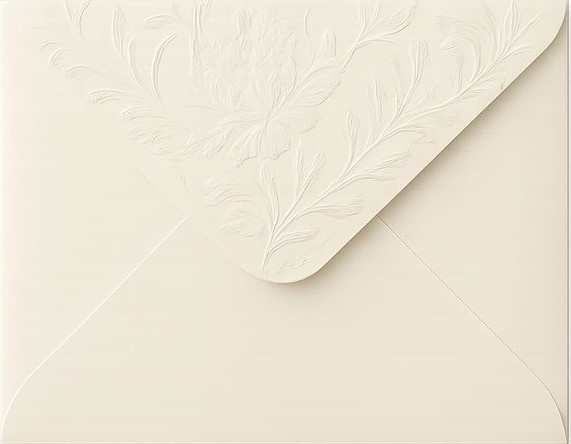

OPEN THE INVITATION


WITH HEARTS FULL OF LOVE AND JOY,
WE INVITE YOU TO CELEBRATE OUR SPECIAL DAY.
YOUR PRESENCE WILL MAKE THIS BEAUTIFUL OCCASION EVEN MORE MEANINGFUL AND UNFORGETTABLE.
JOIN US FOR AN ELEGANT EVENING FILLED WITH LOVE, LAUGHTER, HAPPINESS, AND FOREVER MEMORIES.